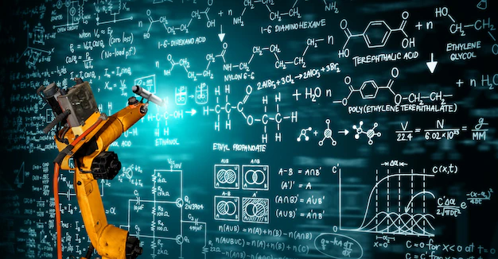
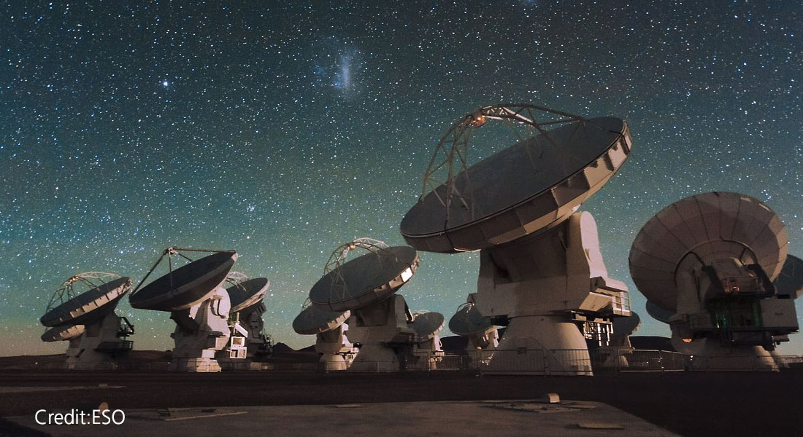
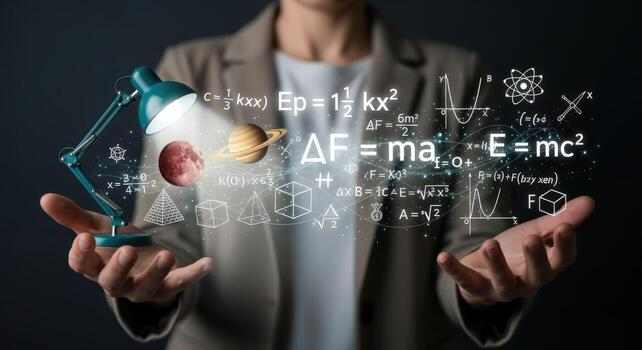

From Mathematics to Possibilities
Every math topic you learn is more than just another formula to memorize. The skills you develop today become the foundation for what you can build, simulate, and optimize tomorrow.
01. Where Can Vectors and Matrices Take You?

Vectors and matrices provide powerful ways to represent, organize, and manipulate quantities and relationships. They are used to describe everything from physical systems and geometric transformations to large sets of data and complex mathematical models.
Engineering & Physics
Solve systems of equations and model structures, circuits, mechanical systems. Represent forces, motion, fields, and transformations between different coordinate systems.
Data, AI & ML
Represent data and perform the mathematical operations behind many machine learning models. Organize and analyze datasets using vectors, matrices, and linear transformations.
Graphics, Games & Robotics
Represent positions, directions, rotations, scaling, and 2D/3D transformations. Describe the position, orientation, and movement of robots and their components.
Learning vectors and matrices gives you a mathematical language for representing complex systems and solving problems involving many variables at once. It also supports Scientific Research and Operations Research for resource-allocation problems.
02. Where Can ODEs Take You?

Ordinary Differential Equations (ODEs) provide a way to describe how quantities change and interact over time. They are especially useful when the behaviour of a system depends on its current state and its rate of change.
Physics & Engineering
Model motion, oscillations, electrical phenomena, heat, and physical systems. Analyze mechanical, electrical, chemical, and control systems.
Biology, Med & Env Science
Model population growth, disease spread, biological processes, pollution, climate-related processes, and resource systems.
Astro & Scientific Computing
Simulate systems whose behaviour changes continuously over time. Model planetary motion, spacecraft trajectories, and other dynamic systems.
Learning ODEs develops the ability to turn changing real-world behaviour into mathematical models, allowing those systems to be analyzed, predicted, and simulated (including applications in Economics and Robotics).
03. Where Can Riemann Integration Take You?

Riemann Integration provides a mathematical way to measure accumulation. It allows quantities that vary continuously to be combined to determine values such as area, distance, volume, work, and total change.
- Physics & Engineering — Calculate distance from velocity, work from force, mass from density, areas, volumes, energy, and fluid behaviour.
- Probability & Data Science — Provide foundations for continuous probability distributions, expected values, and numerical approximations.
- Economics & Env Science — Analyze continuous growth, economic models, pollutant concentration, and resource consumption over time.
- Graphics, Arch & Design — Calculate geometric properties such as areas, volumes, curves, and other spatial quantities.
Integration develops the ability to understand how many small contributions can combine to produce a larger quantity — a principle that appears throughout mathematics, science, and engineering.
04. Where Can Real Analysis Take You?

Real Analysis develops a rigorous understanding of real numbers, sequences, limits, continuity, convergence, and functions. Rather than simply applying mathematical rules, it focuses on understanding the reasoning and conditions behind them.
Pure & Applied Math
Progress towards measure theory, functional analysis, and advanced calculus. Analyze models and understand the limitations of solutions.
Physics & Engineering
Provide rigorous foundations for models involving continuous quantities. Support the analysis of continuous systems, approximation, and numerical methods.
CS & Data Science
Support areas such as optimization, numerical computation, algorithms, theoretical computer science, and probability theory.
Beyond its direct applications, Real Analysis develops the ability to reason precisely, identify assumptions, construct rigorous arguments, and understand why mathematical results hold. These skills are valuable wherever careful mathematical reasoning is required.